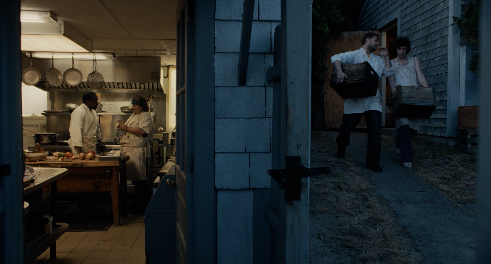

Tony: de la adaptación a la traición

El pasado mes de junio se cumplieron ocho años del fallecimiento del chef, escritor y presentador Anthony Bourdain. Este aniversario de su muerte se produjo en un marco de extrema popularidad y vigencia de su figura en las redes sociales y la cultura pop. Bourdain sigue ahí, sigue de moda: su peculiar estilo de vida, forma de pensar en torno a la gastronomía y la cultura, la sencillez de su figura y el talento comunicativo evidenciados en sus variados y maravillosos programas alrededor del mundo atraen e inspiran, aún a día de hoy, a miles de personas en las redes sociales. Y siempre es una buena noticia que, en los tiempos que corren, la voz de este chef de New Jersey, que nunca tuvo reparo en sentarse en miles de mesas en todo el planeta, escuchando y valorando a cada individuo como igual, se mantenga presente y vigente en nuestra sociedad, como ejemplo de aperturismo, cordialidad y respeto.
Yo mismo fui uno de esos usuarios que se dejó encandilar por el carisma del chef de ascendencia francesa, lo que me llevó a un magnífico e inspirador primer recorrido por toda su obra: Parts Unknown, No Reservations y, sobre todo, su opera magna: Kitchen Confidential, el libro que cambió su vida y le llevó a dejar las cocinas. Un retrato duro, decadente y sincero que desmitificaba la supuesta sofisticación romántica del mundo culinario para mostrar y denunciar la realidad desde una honestidad brutal: Bourdain no quiso nunca hacerse el bueno, como parece que su adaptación cinematográfica quiere vender.
Sobre el papel, y con los antecedentes previamente comentados, una adaptación de un capítulo de Kitchen Confidential dirigida por Matt Johnson y protagonizada por el actor de la maravillosa The Holdovers (2023), parecía tan ilusionante como jugoso, las noticias, trailers y meses de espera hicieron crecer la expectación y es por eso que el golpe fue más duro y seco cuando, después de 106 minutos, las luces se volvieron a encender y los sentimientos de decepción e indiferencia reinaban en mi.
Tony es una película acogedora, bonita, capaz de recrear la nostálgica atmósfera de un final de verano perpetuo en un pueblo costero, como si después de esos maravillosos días no hubiera nada más. El excelso trabajo de Michael Bauman en la dirección de fotografía consigue transmitir esto, pero siento que todo lo que le acompaña no está a la altura.
Centrándonos en ella desde la perspectiva del biopic, o viéndola como la adaptación que vendía ser, creo que hay una gran traición a la historia real, e incluso al propio Anthony Bourdain como autor del libro, en ese ansia y necesidad de blanquearla. Antes definía Kitchen Confidential como una historia dura, decadente y sincera, en la cual Bourdain siempre fue honesto y nunca tuvo necesidad de suavizar ni infantilizar la verdad para llegar al gran público: y lo hizo en forma de órdago en el que apostaba su reputación y su carrera como chef en un compromiso con denunciar la precariedad y los abusos en el mundo laboral del que seguía formando parte. Por eso me parece insultante la forma que tiene su supuesta adaptación cinematográfica de retratar las relaciones de poder dentro de la cocina y la existencia de estupefacientes en ellas, pasando de puntillas por los abismos que verdaderamente definieron la vida y literatura del protagonista.
Intentando dejar esto a un lado, y juzgándola como una obra de ficción, es genérica y predecible a más no poder. La idea de retratar a un joven perdido y en un constante círculo de autodestrucción podía ser interesante si los guionistas hubieran sido capaces de explorar sus sentimientos, su deriva y vacío existencial, de una forma más profunda y no tirando del cliché de convertir la historia en un romance o dándole a su personaje principal la bendición de ser apadrinado por un desconocido de inverosímil bondad. Haciendo, además, que toda la película se sostenga en torno al personaje que encarna Emilia Jones que, carente de toda profundidad o desarrollo, no tiene más importancia que la de ser un trofeo para el protagonista en un desesperado y cutre objetivo de darle sentido a una historia que, al ser real, ya lo tenía por si mismo.
Aunque suene duro y algo enfadado con el producto final, entiendo las críticas positivas al ser una obra entretenida cuya fotografía crea una atmósfera realmente bonita, pero entiendo también que la predisposición de la mayoría del público a disfrutar una película de Matt Johnson sobre el gran Anthony Bourdain era total, al igual que la mía, y es por eso que no puedo evitar calificar a Tony como la mayor decepción, en términos cinematográficos, de lo que va de año.